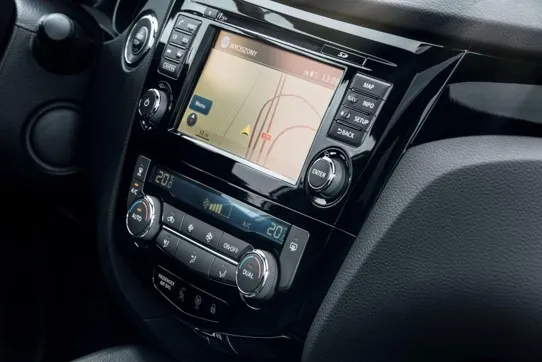

Innovative infotainment systems keep the driver always up-to-date, informed, entertained and connected.
To connect drivers and passengers seamless and holistically with the vehicle and the environment offers completely new possibilities in the field of infotainment. To make these possibilities a reality we support our customers: with secure, reliable and high-performance technologies, as well as intelligent software solutions-for different markets and for different target groups. With our service offerings you can create a customized infotainment device according to your taste and needs or you can enhance your existing technology with our platforms. We offer tailor made solutions for all your Automotive Infotainment system needs. VotaryTech offers Automotive Infotainment System with 4G/5G/WiFi based cloud Connectivity, Secure Streaming of AV content from cloud including premium channels. Vehicle related Data display using OBD2 connector and CAN connectivity. We also offer night Vision capability using IR camera. Our systems can be used for fleet monitoring application. We give, 7 inch Touchscreen Display.
Applications include:
